This guide explains how the YourTour website and the staff dashboard work, and how to use every screen day to day. Read sections 1 to 4 first; then go straight to the screens you use.
Button and menu names are written like Save changes. Screens are shown in English; the dashboard can also be used in French or Arabic — the glossary at the end gives the three names side by side.
The pictures use sample data: every sample customer, package and booking carries a DEMO badge. The phone numbers and the WhatsApp number shown are fictional.
YourTour has two parts that work together: a public website for customers and a private dashboard for the team. Both share the same information.
| Word | Meaning |
|---|---|
| Lead | A customer card. One card per phone number. Everything about that customer lives on it: messages, trip wishes, notes, reminders and bookings. |
| Stage | Where the customer is in the sale, from New to Completed (or Lost). See section 7. |
| Follow-up | A reminder to contact a customer at a given date and time. |
| Package | An Umrah or Hajj offer: hotels, flight, price, what is included. |
| Departure | A dated group for a package, with a number of places. A package can have several departures. |
| Booking | A confirmed sale: which departure, how many travellers, total price and amount paid. |
| Pilgrim | One traveller of a booking, with a document checklist and visa status. |
| DEMO | Sample data for practice. Never a real customer. Can be removed in one click. |
The dashboard reads and organises WhatsApp conversations. It does not send messages. The team keeps replying from the WhatsApp Business app on the agency phone, as today. The Open WhatsApp button on each customer opens the right chat in one click.
| What | Address |
|---|---|
| Website (customers) | Today on the office computer: http://localhost:5173. After going live: the agency's own address (for example www.yourtour.dz). |
| Dashboard (team) | The same address followed by /admin — for example http://localhost:5173/admin. There is also a Staff sign-in link at the bottom of every website page. |
While the system runs on the office computer, it only works on that computer and only while it is switched on (see section 26). Real WhatsApp messages start arriving once the system is online and connected to WhatsApp (section 20).
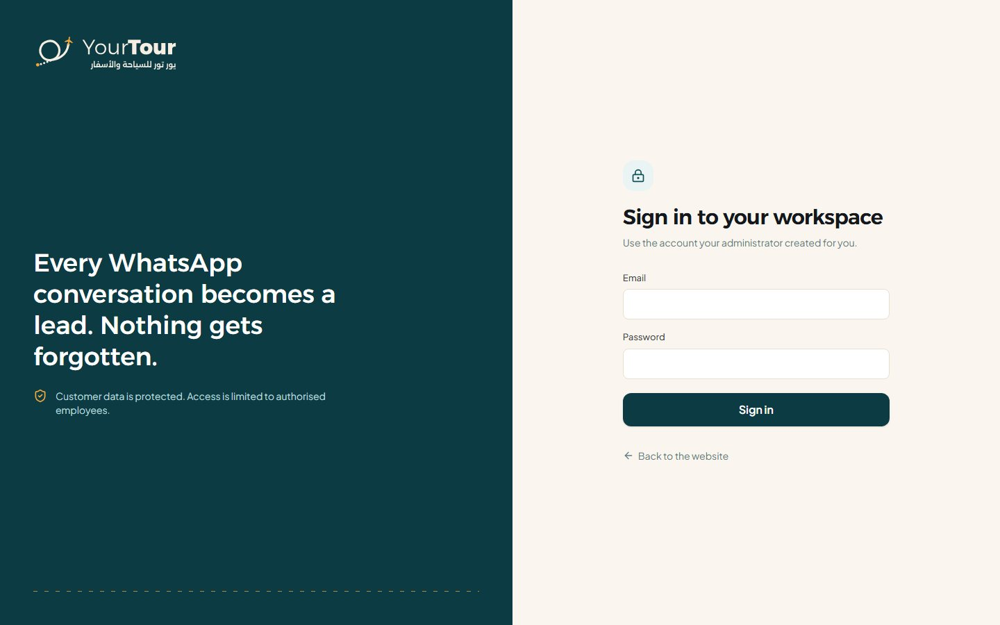
/admin).Click the translate icon (文A) in the top bar, or go to Settings → My preferences. Choose Français, العربية or English. In Arabic the whole screen switches to right-to-left: the menu moves to the right side. Your choice is remembered on that browser.
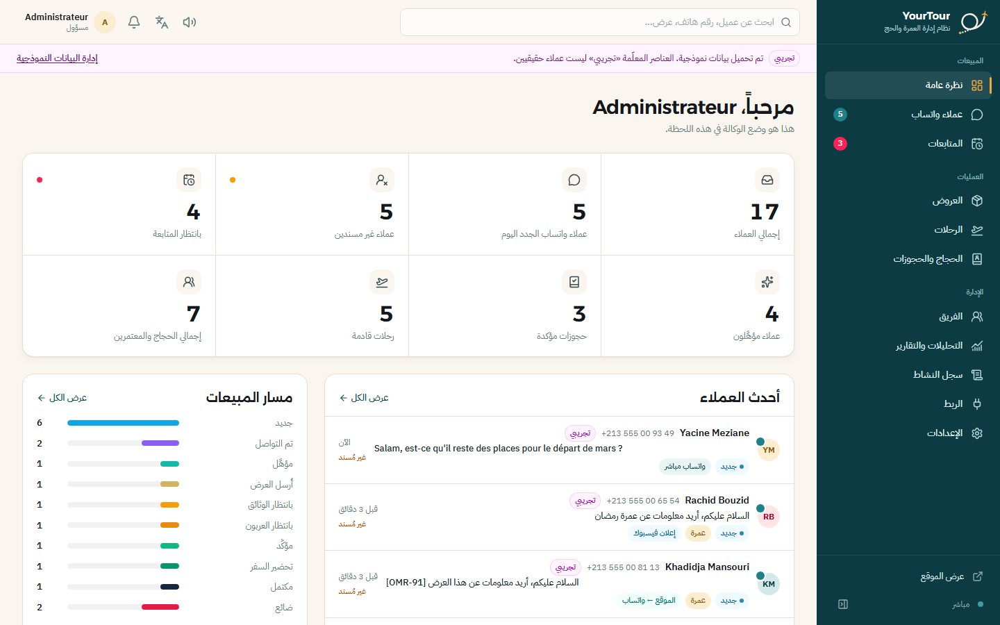
The dashboard works on phones and tablets. On a small screen the menu is hidden: tap the three lines at the top left to open it. Everything else works the same way.
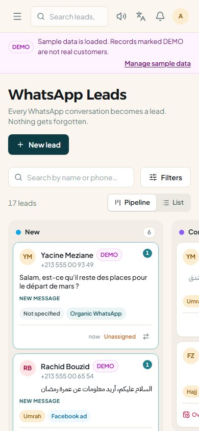
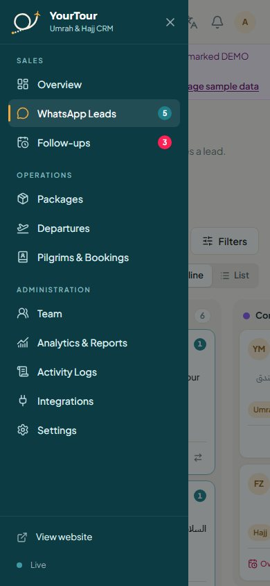
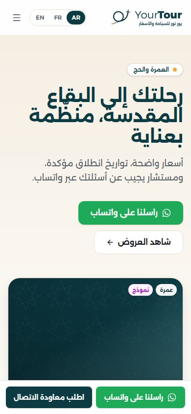
Each employee has one of three roles. The system enforces them: a button you are not allowed to use is either hidden or refused.
| Action | Admin | Manager | Agent |
|---|---|---|---|
| See all leads and bookings | Yes | Yes | Only the ones assigned to them |
| Edit leads, schedule follow-ups, create bookings, update payments | Yes | Yes | On their own customers |
| Add a lead by hand | Yes | Yes | Yes (assigned to themselves) |
| Assign a lead to an employee | Yes | Yes | No |
| Create and edit packages and departures | Yes | Yes | View only |
| Analytics & Reports, Team page | Yes | View | No |
| Activity Logs | Everything | Everything | Their own work only |
| Add, edit, deactivate employees; reset passwords | Yes | No | No |
| Integrations, agency Settings, sample data | Yes | No | No |
| Delete a lead | Yes | No | No |
An agent sees only the leads, follow-ups and bookings assigned to them — on every page, in search, and in live notifications. A new WhatsApp lead appears for an agent once a manager assigns it to them, or immediately if automatic assignment is switched on (section 21).
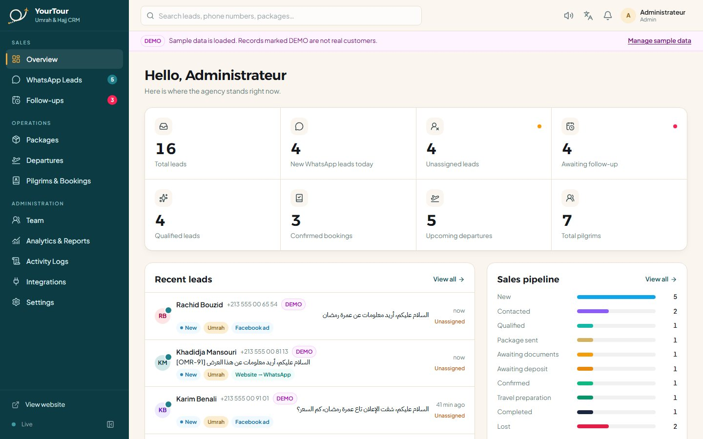
Shown while sample data is loaded. Remove the sample data before real work starts (section 22).
Do these steps once, in this order, before the team starts using the system with real customers.
Prices, hotels, flights and dates are shown to customers exactly as you type them. Enter only what is confirmed, and update it when it changes. Photos must be your own or properly licensed — never copied from another agency's website.
The website shows YourTour's packages and turns visitors into WhatsApp conversations and call-back requests. It opens in Arabic by default; visitors switch with AR · FR · EN at the top.
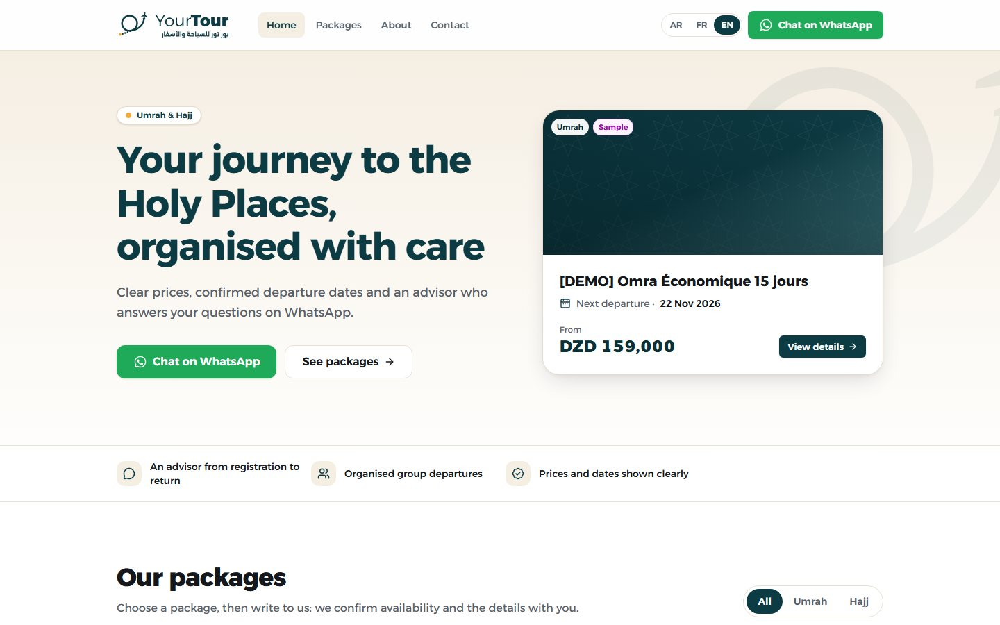
| Page | Content |
|---|---|
| Home | Headline, featured package, strong points, first six packages with Umrah / Hajj tabs, "How it works", call-back form. |
| Packages | All active packages, the number of trips available, Umrah / Hajj filter, sorting by travel date or by price, and a Show more button. |
| Package detail | Every detail you entered, the departure dates with seats left, a WhatsApp button and the call-back form. |
| About · Contact | Agency presentation, licence, address, phone, hours, map link, call-back form. |
| Privacy | What personal data is collected and why (Algerian Law 18-07). |
| Thank you | Shown after the form is sent. |
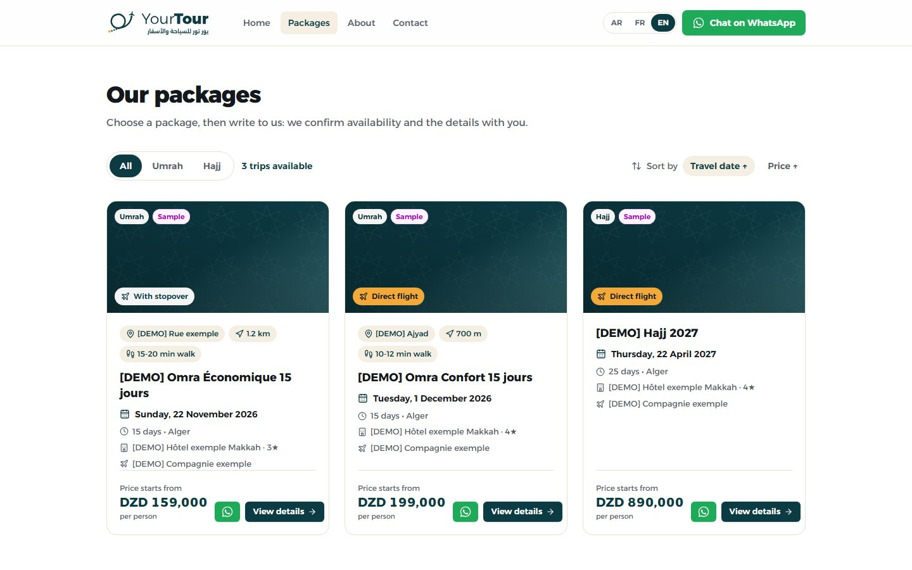
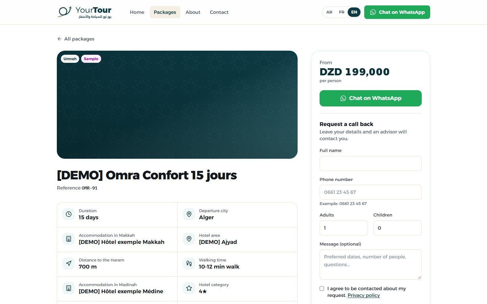
When a customer presses a WhatsApp button on a package, their WhatsApp opens with a ready message that starts with the package reference, for example:
[OMR-01] السلام عليكم، أريد معلومات عن: عمرة 15 يوم
Thanks to this code, the dashboard links the new lead to that package automatically and marks its source as Website → WhatsApp. Buttons that are not about a specific package use the general code [WEB-00]. If the customer deletes the code, the message still arrives normally — only the automatic link to the package is lost.
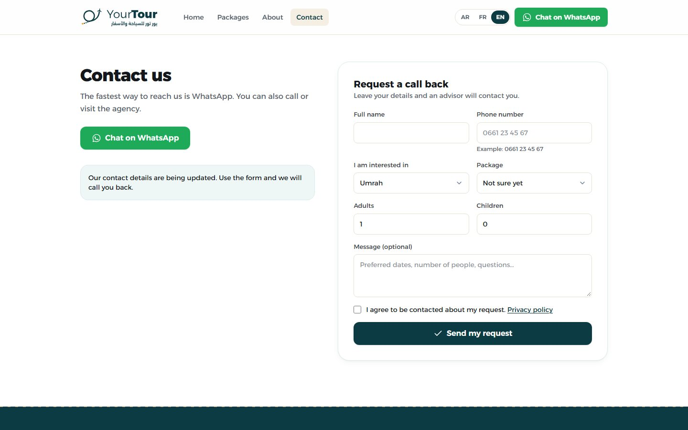
The customer gives a name, phone number, Umrah or Hajj, package (optional), adults, children and a message, and ticks the consent box.
Every WhatsApp conversation becomes a lead automatically. Nobody has to type the customer's name or number.
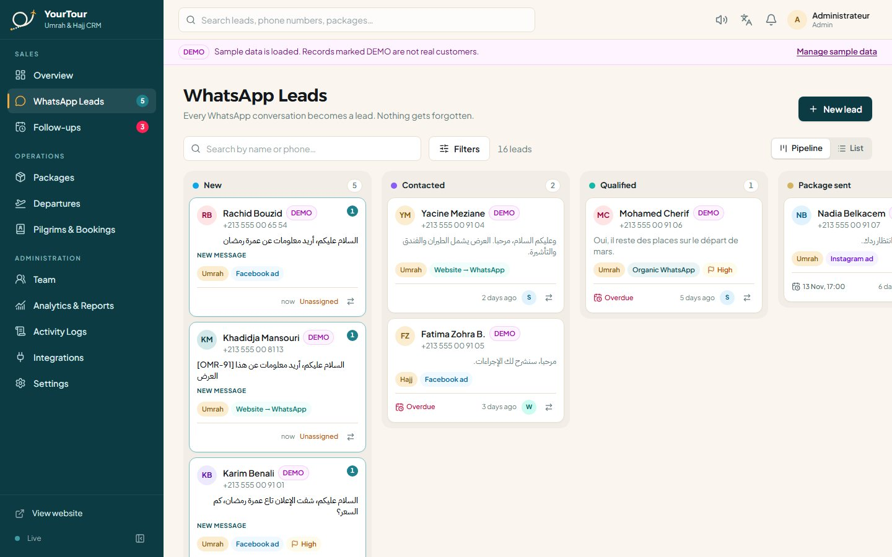
Moving a card to Lost always asks for the reason (price, dates, booked elsewhere…). Reasons are counted in the reports.
| Stage | Means | Usual next step |
|---|---|---|
| New | The customer wrote; nobody has answered yet. | Reply on WhatsApp quickly; assign the lead. |
| Contacted | The agency answered. | Understand the need: Umrah or Hajj, dates, number of people, budget. |
| Qualified | A real project: dates and people are known. | Propose a package. |
| Package sent | An offer was sent. | Schedule a follow-up to get an answer. |
| Awaiting documents | The customer said yes; papers are expected. | Collect passports and photos. |
| Awaiting deposit | Waiting for the deposit. | Confirm the payment. |
| Confirmed | The sale is done. | Create the booking (section 14). |
| Travel preparation | Booked; visa and final preparation. | Complete each traveller's checklist. |
| Completed | The trip took place. | Ask for feedback; keep in touch for next season. |
| Lost | The customer will not travel with us (reason required). | Nothing, or try again next season. |
Once WhatsApp is connected with the Business app (section 20), a reply sent from the agency phone moves a New lead to Contacted by itself and clears its unread counter. This can be switched off in Settings.
Click List (top right) to see the same leads as a table: customer, latest message, service, stage, agent, source, priority, next follow-up and last activity. Click any row to open the customer.
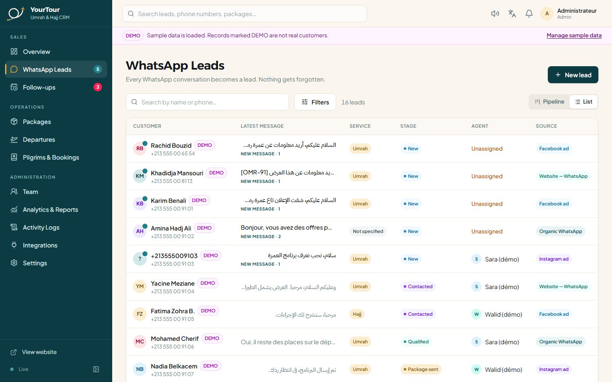
Type a name or at least 3 digits of a phone number in the search box. Press Filters to narrow the list by Stage, Service, Assigned to (including Unassigned), Source, Priority and Created (today, last 7 or 30 days). The number of active filters shows on the button; Clear filters removes them all.
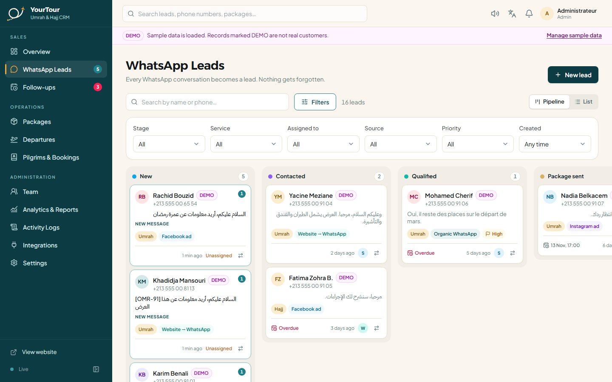
The source badge is filled in automatically, only from information WhatsApp actually provides — never guessed.
| Source badge | When it is used |
|---|---|
| Facebook ad | The customer clicked a Click-to-WhatsApp ad shown on Facebook. The card also shows the ad title and ad ID. |
| Instagram ad | The same, from an ad on Instagram. |
| Meta ad | An ad click, without information about which platform. |
| Facebook / Instagram post | The customer came from a post that is not an ad. |
| Website → WhatsApp | The message starts with a website reference such as [OMR-01]. |
| Website form | The call-back form on the website. |
| Organic WhatsApp | The customer wrote directly, with no ad or website information. |
| Added manually | Created by an employee (walk-in, phone call). |
The service (Umrah or Hajj) is also guessed from the customer's words ("عمرة", "Omra", "حج", "Hajj"…) when it is clear. You can always correct it.
Click any card, row or search result to open the customer's panel on the side of the screen. Press Esc or the ✕ to close it. It has three tabs.
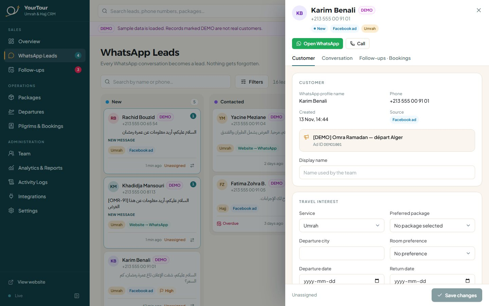
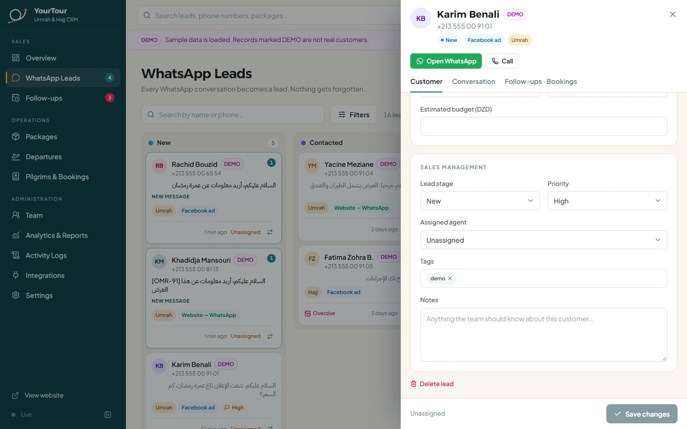
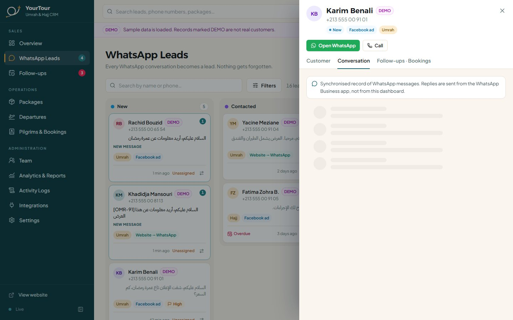
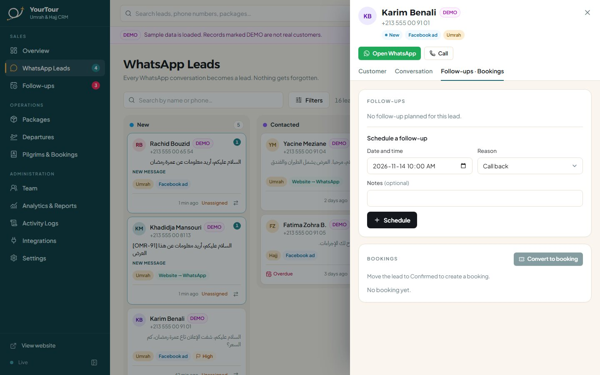
At the bottom of the Customer tab: Delete lead. It removes the card and its conversation record and cannot be undone. Customers with bookings cannot be deleted. In most cases, moving the customer to Lost is the better choice.
For customers who visit the agency or phone. WhatsApp and website customers are added automatically — do not add them again.
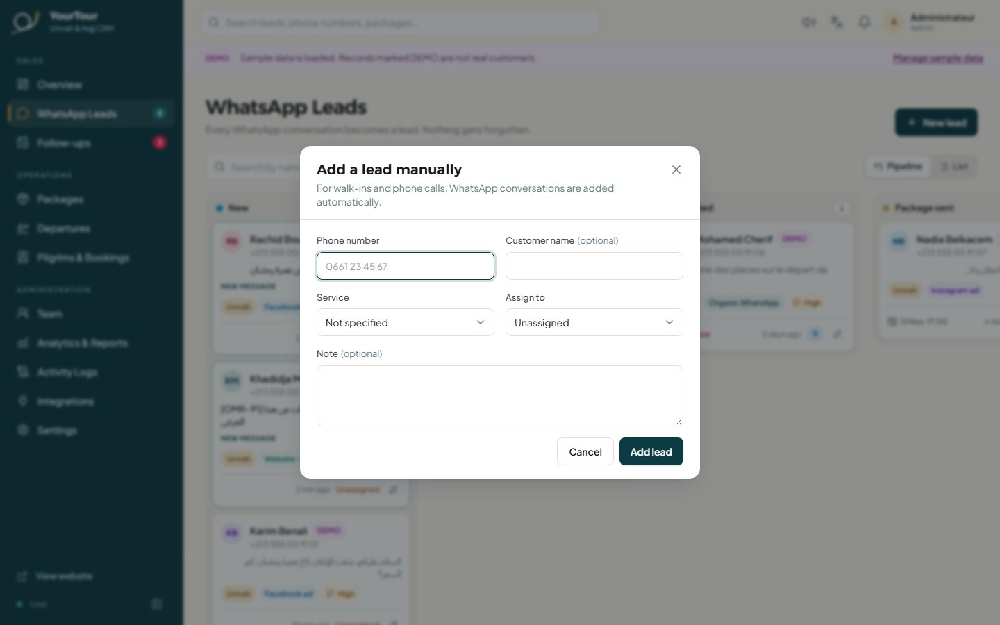
Accepted phone formats: 0661 23 45 67, 0661-234-567, +213 661 23 45 67, 00213661234567, landlines like 033 27 19 65, and foreign numbers written with + or 00.
If the number already exists, the system says so and offers Open the existing lead instead of creating a duplicate.
Keep the dashboard open in a browser tab during working hours: new leads and messages appear without refreshing the page.
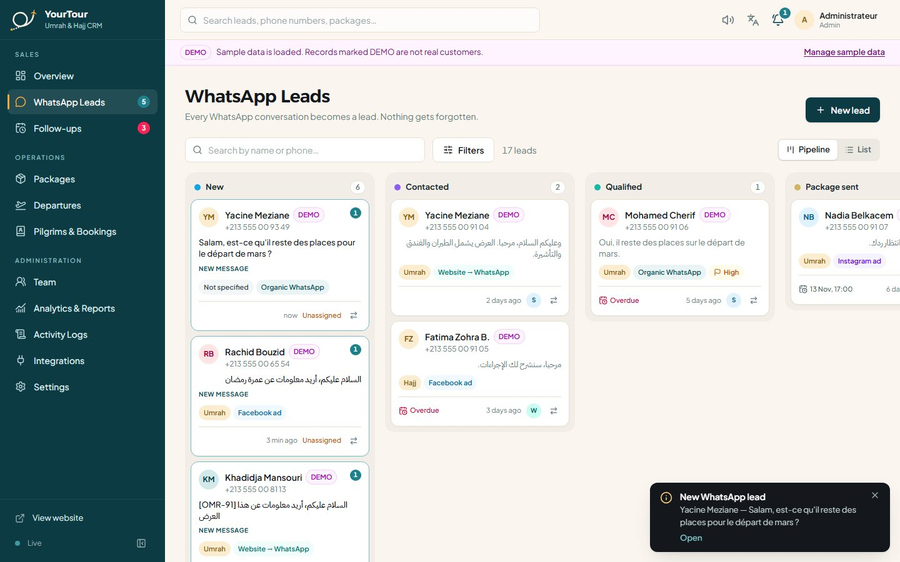
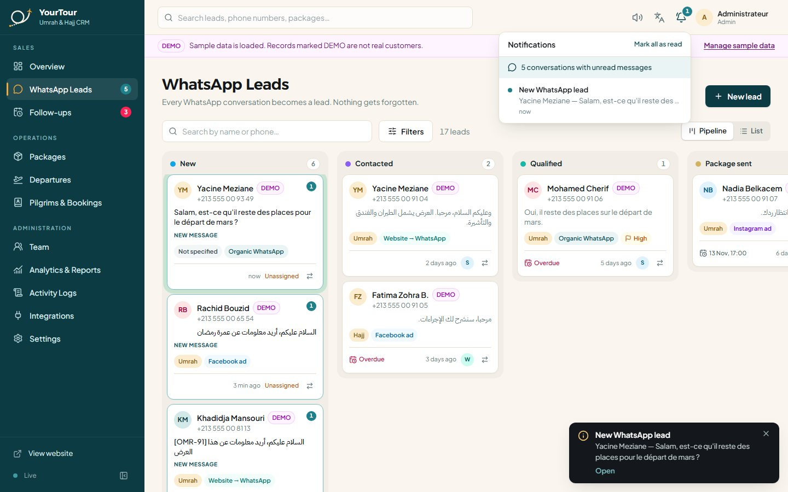
Follow-ups make sure no customer is forgotten. Schedule one every time you promise to call back.
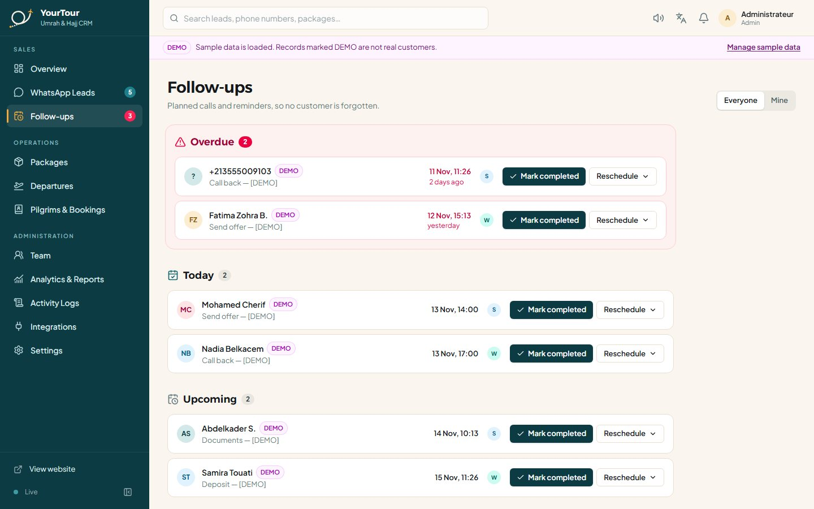
The next follow-up also shows on the customer's card, and the Overview counts customers whose reminder is due today or late.
A package is an Umrah or Hajj offer. Active packages are published on the website.
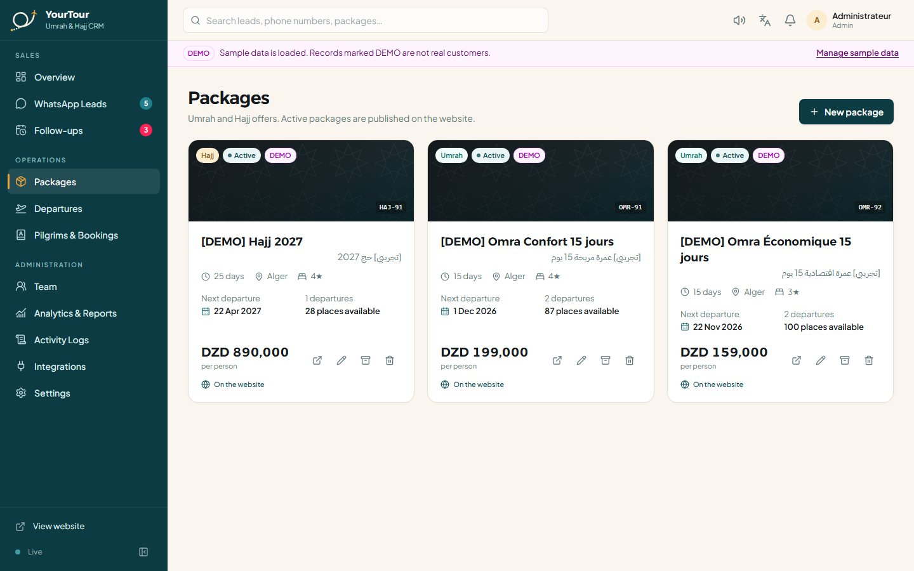
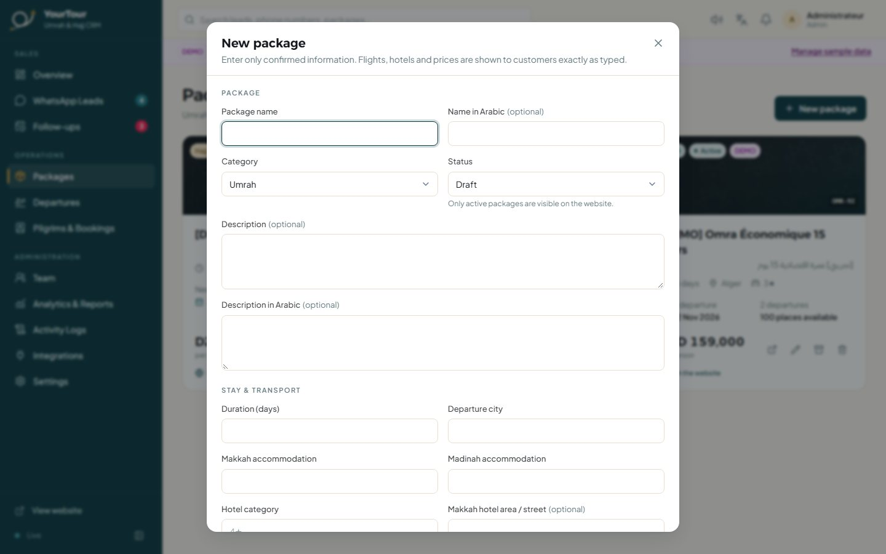
| Field | What to enter |
|---|---|
| Name · Name in Arabic | As customers should see it. The Arabic name is used on the Arabic website. |
| Category · Status | Umrah or Hajj. Status: Draft (hidden), Active (on the website), Sold out (hidden from the website), Archived (hidden and greyed out). |
| Description | What is included, programme, conditions — in French and in Arabic. |
| Duration · Departure city | Number of days; city of departure. |
| Makkah / Madinah accommodation | Hotel names, and the hotel category (e.g. 4★). |
| Hotel area · Distance · Walking time | Area or street of the Makkah hotel, distance to the Haram in metres (shown as "700 m" or "1.2 km") and walking time in minutes (e.g. 10-12). |
| Airline · Flight type · Flight information | Airline name; direct or with stopover (shown as a badge on the card); free text for the flight details. |
| Transport · Room options | Buses and transfers; the room types offered (single, double, triple, quad). |
| Price per person · Capacity | Price in DZD; the usual number of places per group (proposed for new departures). |
| Cover image link | An https:// link to a photo you own or have the right to use. |
| First departure | Optional, only when creating: departure and return dates of the first group. |
A departure is a dated group of a package. Places left are calculated from the bookings.
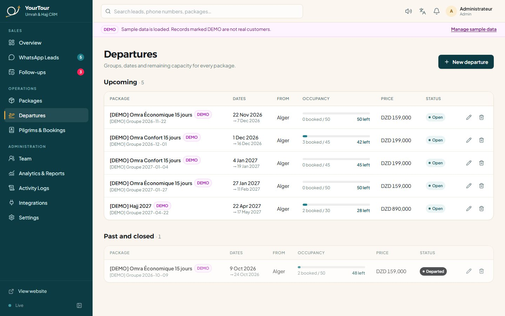
| Field | Meaning |
|---|---|
| Package · Dates | Which package; departure and return dates (return after departure). |
| Capacity | Number of places. It cannot be set lower than the places already booked. |
| Price per person | Leave empty to use the package price; fill it to give this group a different price. |
| Status | Open — bookable and on the website. Closed — no new bookings, hidden from the website. Departed — the group has left. Cancelled. |
| Group name · City · Flight · Notes | Optional details for the team. |
A departure with bookings cannot be deleted — close or cancel it instead.
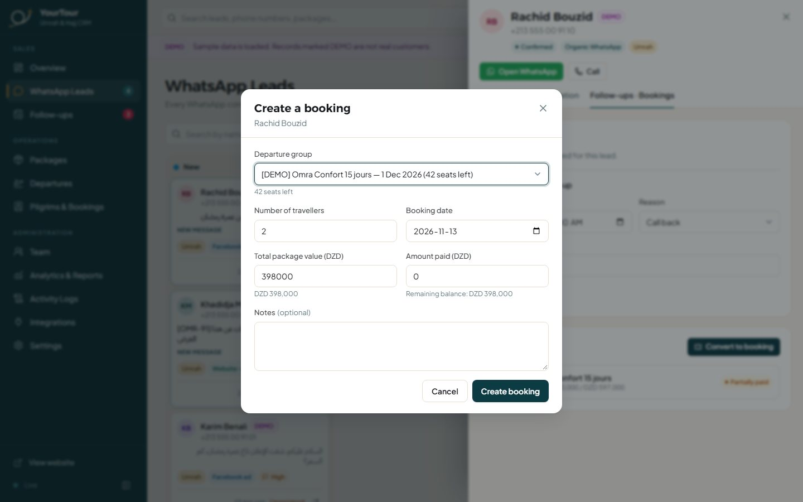
The system then creates the booking, one pilgrim record per traveller, takes the places from the departure, and updates "seats left" on the website.
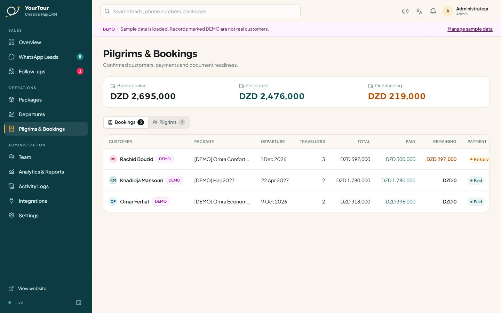
The amount paid can never be higher than the total. Click the customer's name to open their panel.
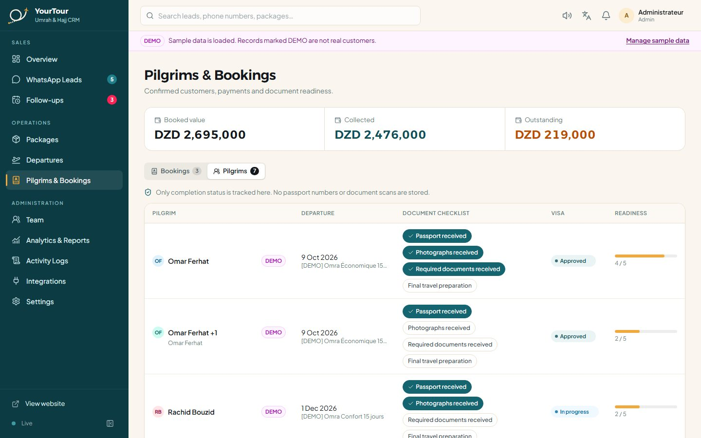
Only the progress is recorded here. Do not type passport numbers or upload document scans anywhere in the system — keep the originals in the agency's secure file.
The first page after signing in. Every number is calculated from the real records; click a number to open the matching list. Agents see figures for their own customers.
| Figure | What it counts |
|---|---|
| Total leads | All customer cards. |
| New WhatsApp leads today | Conversations that started today on WhatsApp (manual and website-form leads not included). |
| Unassigned leads | Open customers with no employee yet (confirmed, completed and lost not counted). An amber dot warns when there are some. |
| Awaiting follow-up | Customers with a reminder due today or already late. A red dot warns when there are some. |
| Qualified leads | Customers at Qualified, Package sent, Awaiting documents or Awaiting deposit. |
| Confirmed bookings | Bookings that are not refunded or cancelled. |
| Upcoming departures | Departures from today on that are not cancelled or departed. |
| Total pilgrims | Travellers in bookings that are not refunded or cancelled. |
Below the figures: Recent leads (latest activity, with a green dot when unread), the Sales pipeline (customers per stage — click a stage to see them), Upcoming departures with places booked, Team performance, and Recent activity.
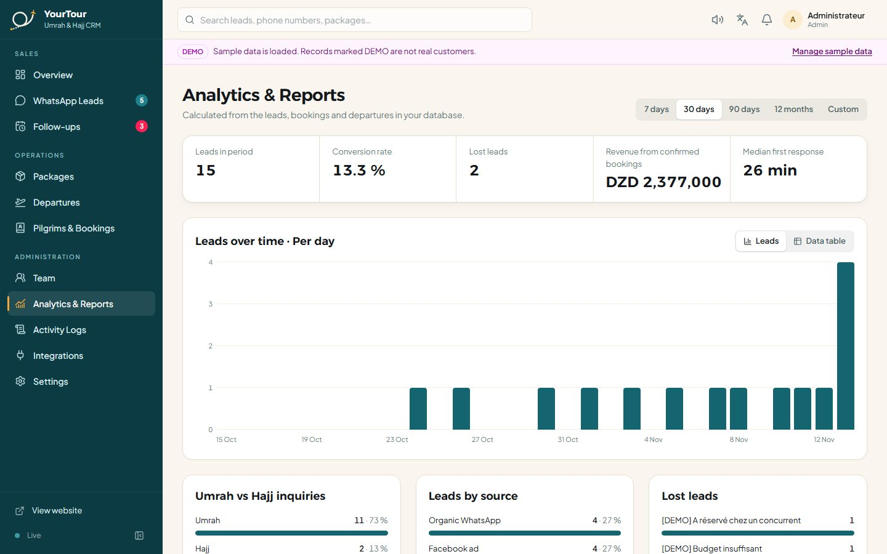
| Figure | How it is calculated |
|---|---|
| Leads in period | Customers created during the period. |
| Conversion rate | Share of those customers who reached Confirmed or later. |
| Lost leads | Customers of the period now at Lost; the reasons are listed in "Lost leads". |
| Revenue from confirmed bookings | Total value of bookings dated in the period, not refunded or cancelled. Hover to see the amount collected. |
| Median first response | Typical time between a customer's first message and the agency's first reply. Needs WhatsApp connected with the Business app. |
Charts: leads per day, week or month (switch to Data table to read the exact numbers), Umrah versus Hajj, leads by source (which ads work), lost reasons, bookings per employee, best-selling packages, and how full the next groups are (always the upcoming groups, whatever the period).
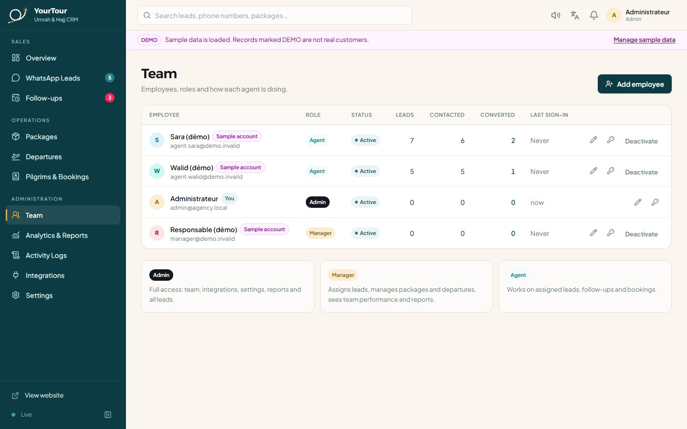
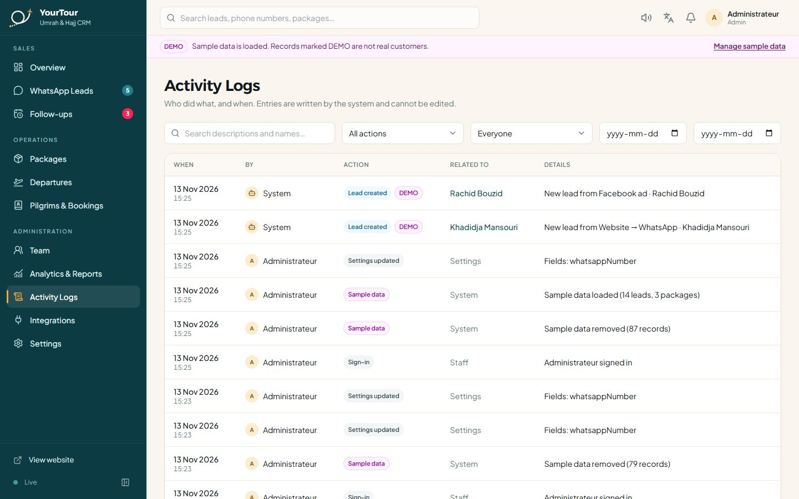
Every important event is recorded automatically: new lead, incoming message, reply from the Business app, assignment, stage change (with the lost reason), package chosen, booking created, payment updated, follow-up scheduled, rescheduled or completed, packages and departures created or changed, employees added or changed, settings changed, sign-ins, integration events and webhook errors.
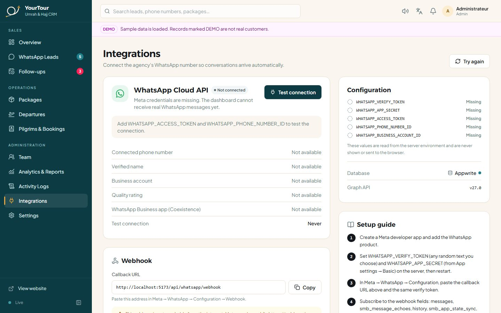
| Status | Meaning |
|---|---|
| Not connected | The Meta (WhatsApp) settings are missing. No real message can arrive yet. This is the current state. |
| Configured — not verified | Settings are in place; press Test connection and send a test message. |
| Connected | The last test with Meta succeeded. The connected number, verified name and quality rating are shown. |
| Connection error | The last test failed; the reason is shown in red. |
The page also shows the webhook address to give to Meta, when Meta last checked it, the last real and the last simulated message, the last error, the latest webhook events, and which settings are present (never their values). The Database line has a green dot when the data store is working.
Connecting needs the agency's Meta Business account, a Meta developer app and access to the server settings. This is done once by the technical person, following docs/META_SETUP.md. The steps are also summarised on this page under Setup guide.
The agency wants to keep answering from the WhatsApp Business app. Meta offers this as Coexistence: the app keeps working, and the dashboard receives a copy of every conversation, including the replies sent from the phone. What to know, according to Meta's rules (November 2026):
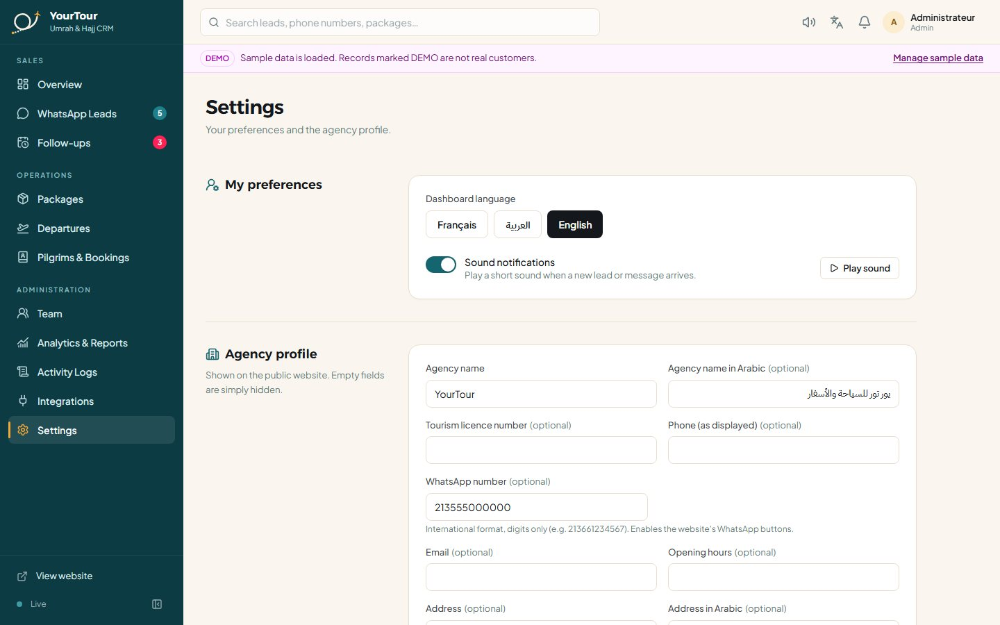
| Section | What it does |
|---|---|
| My preferences | Dashboard language and sound notifications, with Play sound to test. Saved on this browser only. |
| Agency profile | Name (French and Arabic), licence number, phone, WhatsApp number (international format, digits only, e.g. 213661234567), email, address, opening hours, Google Maps, Facebook and Instagram links. Shown on the website. |
| Lead automation | Assign new leads automatically: off (a manager assigns each lead) or in turn between active agents. Move New to Contacted when the agency replies from the Business app. Default sound and default language for new employees. |
| Pilgrim document checklist | The steps tracked for every traveller (up to 12). Add, rename or remove steps, then save. |
Before real customers arrive, practise with sample data. Everything it creates is marked DEMO and can be removed in one click without touching real data.
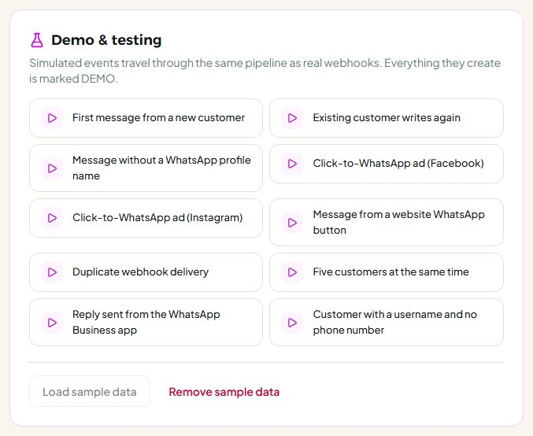
On the live server these tools are switched off unless the technical person enables them.
| Problem | What to do |
|---|---|
| I cannot sign in. | Check the email and password. After many wrong tries, wait 5 minutes. Ask an administrator to reset your password or reactivate your account. |
| No sound for new leads. | Click once anywhere on the dashboard (browsers need it), check the speaker icon, test with Settings → Play sound, check the computer's volume. |
| New leads do not appear by themselves. | Look at the light at the bottom of the menu. If it says Reconnecting…, check the internet connection or reload the page. Real WhatsApp messages only arrive once WhatsApp is connected (section 20). |
| An agent cannot see a customer. | The customer is not assigned to them. A manager assigns it in the customer's panel. |
| I cannot change the assigned agent. | Only managers and administrators can. |
| "Convert to booking" is greyed out. | Move the customer to Confirmed first. |
| No departure in the booking list. | Only open, future departures with free places are listed. Check the departure's status, date and capacity. |
| A package is not on the website. | Its status must be Active. Customers only see departures that are Open and in the future. |
| The website has no WhatsApp buttons. | Enter the WhatsApp number in Settings → Agency profile. |
| Seats left look wrong. | Cancelled or refunded bookings release their places. Check the bookings of that departure and its capacity. |
| The same customer appears twice. | It cannot happen for the same phone number. Two cards mean two different numbers (for example two family members). |
| A customer from last year wrote again. | Their message is on their old card. Move it back to Contacted for the new trip. |
| I saved something by mistake. | Change it back and save. The Activity Logs show what the previous value was. |
| "Something went wrong" message. | Reload the page and try again. If it keeps happening, note the time and tell the administrator. |
This page is for whoever installs and keeps the system running. Full technical documentation is in the project folder (README.md and the docs folder).
The project is in C:\Users\EIX\Desktop\agency. Open a terminal in that folder:
npm run appwrite:start — starts the database (Appwrite).npm run dev:appwrite — starts the website and dashboard on http://localhost:5173. Keep this window open.npm run appwrite:stop (frees about 3 GB of memory).docs/META_SETUP.md).The same screens in the three dashboard languages.
| English | Français | العربية |
|---|---|---|
| Menu | ||
| Overview | Vue d'ensemble | نظرة عامة |
| WhatsApp Leads | Leads WhatsApp | عملاء واتساب |
| Follow-ups | Relances | المتابعات |
| Packages | Forfaits | العروض |
| Departures | Départs | الرحلات |
| Pilgrims & Bookings | Pèlerins & réservations | الحجاج والحجوزات |
| Team | Équipe | الفريق |
| Analytics & Reports | Analyses & rapports | التحليلات والتقارير |
| Activity Logs | Journal d'activité | سجل النشاط |
| Integrations | Intégrations | الربط |
| Settings | Paramètres | الإعدادات |
| Lead stages | ||
| New | Nouveau | جديد |
| Contacted | Contacté | تم التواصل |
| Qualified | Qualifié | مؤهَّل |
| Package sent | Forfait envoyé | أُرسل العرض |
| Awaiting documents | Attente documents | بانتظار الوثائق |
| Awaiting deposit | Attente acompte | بانتظار العربون |
| Confirmed | Confirmé | مؤكَّد |
| Travel preparation | Préparation du voyage | تحضير السفر |
| Completed | Terminé | مكتمل |
| Lost | Perdu | ضائع |
| Payments and roles | ||
| Unpaid | Non payé | غير مدفوع |
| Partially paid | Partiellement payé | مدفوع جزئياً |
| Paid | Payé | مدفوع |
| Refunded | Remboursé | مُسترجَع |
| Cancelled | Annulé | ملغى |
| Admin · Manager · Agent | Admin · Responsable · Agent | مسؤول · مشرف · موظف مبيعات |
| Frequent buttons | ||
| Save changes | Enregistrer | حفظ التغييرات |
| Open WhatsApp | Ouvrir WhatsApp | فتح واتساب |
| New lead | Nouveau lead | عميل جديد |
| Convert to booking | Convertir en réservation | تحويل إلى حجز |
| Mark completed | Marquer terminée | تعليم كمنجزة |
| Reschedule | Reporter | تأجيل |
YourTour · يور تور للسياحة والأسفار · Voyages & Tourisme · Batna 05 — User guide v1.0, 13 November 2026.